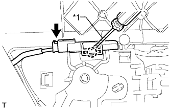

REAR DOOR > DISASSEMBLY |
| 1. DISCONNECT CABLE FROM NEGATIVE BATTERY TERMINAL |
| Condition | Waiting Time |
| Vehicle enrolled in G-BOOK system | 6 minutes |
| Vehicle not enrolled in G-BOOK system | 1 minute |
| 2. REMOVE REAR DOOR INSIDE HANDLE BEZEL PLUG LH |
 |
Using moulding remover A, detach the 3 claws and remove the rear door inside handle bezel plug as shown in the illustration.
| 3. REMOVE REAR ARMREST ASSEMBLY LH |
 |
Using moulding remover B, detach the 7 claws and 7 guides and remove the rear armrest assembly as shown in the illustration.
| 4. REMOVE REAR POWER WINDOW REGULATOR SWITCH ASSEMBLY WITH REAR DOOR ARMREST BASE PANEL |
 |
Using a moulding remover B, detach the 2 clips, 4 claws and guide as shown in the illustration.
Disconnect the connector and remove the rear power window regulator switch assembly with rear door armrest base panel.
| 5. REMOVE REAR DOOR TRIM BOARD SUB-ASSEMBLY LH |
Remove the 2 screws.
Using a clip remover, detach the 9 clips.
 |
Pull out the rear door trim board sub-assembly in the direction indicated by the arrow in the illustration.
Raise the rear door trim board sub-assembly to detach the 4 claws and remove the rear door trim board sub-assembly together with the rear door inner glass weatherstrip.
 |
Disconnect the rear door lock remote control cable assembly and rear door inside locking cable assembly as shown in the illustration.
Disconnect each connector.
 |
Using a screwdriver, detach the claw and remove the clamp.
| 6. REMOVE REAR DOOR INNER GLASS WEATHERSTRIP LH |
 |
Using a screwdriver, detach the 3 claws and remove the rear door inner glass weatherstrip from the rear door trim board sub-assembly as shown in the illustration.
| 7. REMOVE REAR POWER WINDOW REGULATOR SWITCH ASSEMBLY |
 |
Detach the 2 claws and remove the rear power window regulator switch assembly.
| 8. REMOVE NO. 2 COURTESY LIGHT ASSEMBLY |
 |
Detach the 2 claws and remove the light.
Disconnect the connector.
| 9. REMOVE REAR DOOR INSIDE HANDLE ILLUMINATION LIGHT ASSEMBLY LH |
|  |
Disconnect the connector.
| *1 | Protective Tape |
Using a screwdriver, detach the claw and remove the light.
| 10. REMOVE REAR DOOR INSIDE HANDLE SUB-ASSEMBLY LH |
Remove the 14 screws.
Move the assist grip together with the inside handle sub-assembly to detach the 9 guides.
Slide the assist grip together with the inside handle sub-assembly to make a space between the ornament panel and assist grip.
Rotate the assist grip together with the inside handle sub-assembly to detach the 2 guides on the rear of the trim, and then pull out the assist grip together with the inside handle sub-assembly.
 |
Detach the 5 claws and remove the inside handle sub-assembly.
| 11. REMOVE REAR NO. 2 SPEAKER ASSEMBLY (for 14 Speakers) |
Remove the 2 screws and No. 2 speaker.
| 12. REMOVE REAR SPEAKER ASSEMBLY |
Disconnect the connector.
Remove the 3 screws.
Detach the 2 claws and remove the rear speaker.
| 13. REMOVE REAR DOOR SERVICE HOLE COVER LH |
 |
Disconnect the connector.
Detach the 3 clamps, move the wire harness out of the way and remove the service hole cover.
| 14. REMOVE REAR DOOR GLASS RUN LH |
 |
Remove the rear door glass run.
| 15. REMOVE REAR DOOR FRAME GARNISH LH |
Detach the clip and remove the rear door frame garnish.
| 16. REMOVE REAR DOOR WINDOW DIVISION BAR SUB-ASSEMBLY LH |
Loosen the temporary bolt.
| *1 | Temporary Bolt |
Remove the 2 bolts and screw.
Remove the rear door window division bar sub-assembly.
Remove the temporary bolt from the rear door window division bar sub-assembly.
| 17. REMOVE REAR DOOR QUARTER WINDOW GLASS LH |
 |
Remove the rear door quarter window glass and rear door quarter window weatherstrip as a unit as shown in the illustration.
| 18. REMOVE REAR DOOR QUARTER WINDOW WEATHERSTRIP LH |
 |
Remove the rear door quarter window weatherstrip from the rear door quarter window glass.
| 19. REMOVE REAR DOOR GLASS SUB-ASSEMBLY LH |
Connect the cable to the negative (-) battery terminal and rear power window regulator motor connector.
Connect the power window regulator switch assembly and move the rear door glass sub-assembly so that the door glass bolts can be seen.
Disconnect the power window regulator switch assembly and rear power window regulator motor connectors.
Disconnect the cable from the negative (-) battery terminal.
| Condition | Waiting Time |
| Vehicle enrolled in G-BOOK system | 6 minutes |
| Vehicle not enrolled in G-BOOK system | 1 minute |
Remove the rear door glass sub-assembly from the rear door window regulator sub-assembly as shown in the illustration.
 |
Remove the rear door glass sub-assembly as indicated by the arrows in the order shown in the illustration.
| 20. REMOVE REAR DOOR GLASS CHANNEL SUB-ASSEMBLY LH |
Using a screwdriver, remove the rear door glass channel sub-assembly.
| *1 | Protective Tape |
| 21. REMOVE REAR DOOR GLASS CHANNEL FILLER |
Remove the rear door glass channel filler.
| 22. REMOVE REAR DOOR WINDOW REGULATOR SUB-ASSEMBLY LH |
Loosen the temporary bolt.
| *1 | Temporary Bolt |
Remove the 3 bolts.
Remove the rear door window regulator assembly.
Remove the temporary bolt from the rear door window regulator assembly.
| 23. REMOVE POWER WINDOW REGULATOR MOTOR ASSEMBLY LH |
 |
Using a T25 "TORX" socket wrench, remove the 3 screws and power window regulator motor.
| 24. REMOVE REAR DOOR LOCK ASSEMBLY LH |
 |
Using a T30 "TORX" wrench, remove the 3 screws.
 | Slide |
Move the rear door lock assembly downward, pull the release plate out of the rear door outside handle frame, and remove the rear door lock assembly and cables as a unit.
Remove the door lock wiring harness seal from the rear door lock assembly.
| 25. REMOVE REAR DOOR LOCK REMOTE CONTROL CABLE ASSEMBLY LH |
Using a screwdriver, detach the claw.
Remove the rear door lock remote control cable assembly.
| 26. REMOVE REAR DOOR INSIDE LOCKING CABLE ASSEMBLY LH |
Using a screwdriver, detach the 3 claws.
Remove the rear door inside locking cable assembly.
| 27. REMOVE REAR DOOR OUTSIDE HANDLE COVER LH |
Using a T30 "TORX" socket wrench, loosen the screw.
Detach the claw and remove the rear door outside handle cover.
| 28. REMOVE REAR DOOR OUTSIDE HANDLE ASSEMBLY LH |
 |
Move the lever in the direction indicated by the arrow in the illustration.
 |
Remove the rear door outside handle assembly as shown in the illustration.
| 29. REMOVE REAR DOOR NO. 1 OUTSIDE HANDLE PAD LH |
Detach the 3 claws and remove the rear door No. 1 outside handle pad.
| 30. REMOVE REAR DOOR NO. 2 OUTSIDE HANDLE PAD LH |
 |
Detach the 2 claws and remove the rear door No. 2 outside handle pad.
| 31. REMOVE REAR DOOR OUTSIDE HANDLE FRAME SUB-ASSEMBLY LH |
 |
Using a T30 "TORX" socket wrench, loosen the screw.
Slide the rear door outside handle frame sub-assembly to detach the door handle nut and claw of the rear door outside handle frame sub-assembly, and then remove the rear door outside handle frame sub-assembly.
| 32. REMOVE REAR DOOR NO. 2 WEATHERSTRIP LH |
Using a clip remover, detach the 6 clips and guide and remove the rear door No. 2 weatherstrip as shown in the illustration.
| 33. REMOVE REAR DOOR NO. 3 WEATHERSTRIP LH |
 |
Using a clip remover, detach the clip.
Using a heat light, heat the rear door No. 3 weatherstrip.
| Item | Temperature |
| Vehicle body | 40 to 60°C (104 to 140°F) |
| rear door No. 3 weatherstrip | 20 to 30°C (68 to 86°F) |
Remove the rear door No. 3 weatherstrip.
| *1 | Double-sided Tape |
| 34. REMOVE REAR DOOR CHECK ASSEMBLY LH |
 |
Remove the bolt, 2 nuts and rear door check assembly.
| 35. REMOVE REAR DOOR WEATHERSTRIP LH |
 |
Using a clip remover, detach the 19 clips and guide and remove the rear door weatherstrip.
| 36. REMOVE REAR DOOR BELT MOULDING LH |
 |
Detach the 7 claws and remove the rear door belt moulding.
| *1 | Protective Tape |
| 37. REMOVE REAR DOOR FRONT WINDOW FRAME MOULDING LH |
| Item | Temperature |
| Vehicle Body | 40 to 60°C (104 to 140°F) |
| Window Frame Moulding | 20 to 30°C (68 to 86°F) |
 |
Remove the door window frame moulding clip.
Put protective tape around the rear door front window frame moulding.
Using a moulding remover, detach the clip and remove the double-sided tape to remove the rear door front window frame moulding.
| *1 | Protective Tape |
| *2 | Double-sided Tape |
| *3 | Moulding Remover |
| 38. REMOVE NO. 2 BLACK OUT TAPE LH |
| Item | Temperature |
| Vehicle Body | 40 to 60°C (104 to 140°F) |
| Black Out Tape | 20 to 30°C (68 to 86°F) |
Pull back an edge of the No. 2 black out tape and pull it parallel to the vehicle body to remove it.
| 39. REMOVE REAR DOOR LOWER OUTSIDE STRIPE LH |
| Item | Temperature |
| Vehicle Body | 40 to 60°C (104 to 140°F) |
| Outside Stripe | 20 to 30°C (68 to 86°F) |
Pull back an edge of the rear door lower outside stripe and pull it parallel to the vehicle body to remove it.
| 40. REMOVE BLACK OUT TAPE LH |
| Item | Temperature |
| Vehicle Body | 40 to 60°C (104 to 140°F) |
| Black Out Tape | 20 to 30°C (68 to 86°F) |
Pull back an edge of the black out tape and pull it parallel to the vehicle body to remove it.
| 41. REMOVE REAR DOOR OUTSIDE STRIPE LH |
 |
| Item | Temperature |
| Vehicle Body | 40 to 60°C (104 to 140°F) |
| Outside Stripe | 20 to 30°C (68 to 86°F) |
Pull back an edge of the rear door outside stripe and pull it parallel to the vehicle body to remove it.
| 42. REMOVE REAR DOOR PANEL CUSHION |
Using a clip remover, detach the clip and remove the door panel cushion.